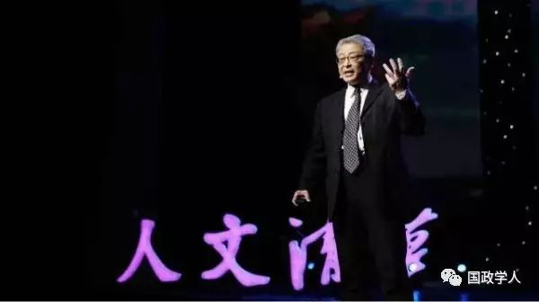
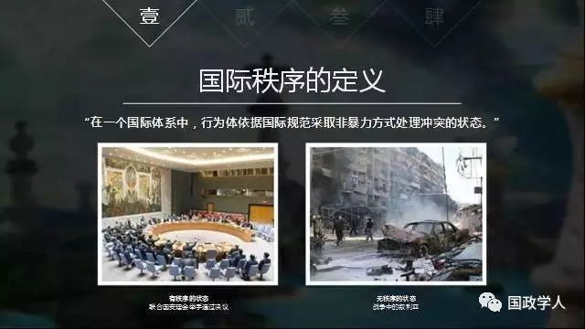
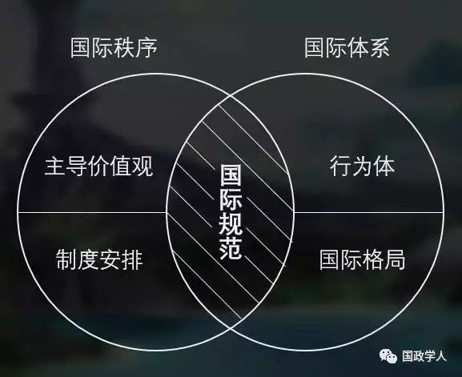
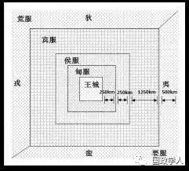
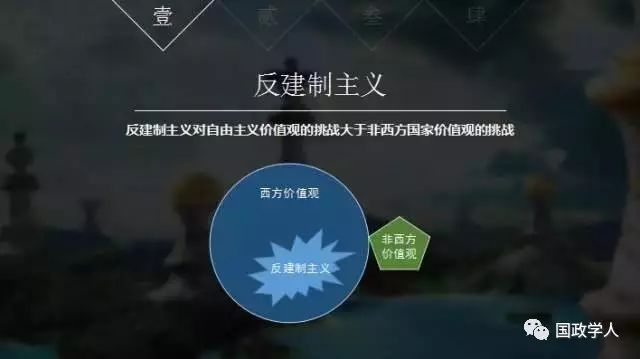
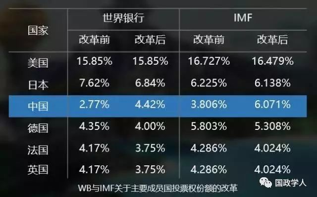

收录于合集

作者简介： 阎学通，清华大学国际关系研究院院长、世界和平论坛秘书长；
文献来源： 微信公众号 人文清华讲坛（renwen_Tsinghua）
今后五年，国际秩序向何处去

一、为什么讨论国际秩序问题？
****一方面，人们越来越关心国际秩序的变化，去年国际社会出现了众多“黑天鹅”现象，尤其在特朗普上台后，社会公众和国际关系学界关于国际秩序未来变化的讨论更加热烈。但另一方面，人们对国际秩序的认识还不充分，国内外对于什么是国际秩序、国际秩序与国际体系有什么区别、谁在改变当前的国际秩序等问题还不特别了解。因此， 在讨论国际秩序的变化趋势之前，我们有必要先来认识一下有关国际秩序的基本概念和影响国际秩序变化的条件及因素。
二、什么是国际秩序？
1．国际秩序的定义是什么？
国际秩序是指国际体系中的行为体依据国际规范采取非暴力方式处理冲突的状态。 **在国际社会，秩序的重要标志是有无战争 。**没有战争，我们就认为是有秩序的。而有战争，就是没有秩序的，比如图中在战争中的叙利亚，就处于无秩序的状态。

2．国际秩序的构成要素有哪些？
** 国际秩序由主导价值观、制度安排和国际规范这三要素构成。**主导价值观是绝大多数国际成员接受的思想观念，现有国际秩序的主导价值观是西方自由、民主、平等的自由主义思想。
国际规范是根据主导价值观而制定的约束国际成员行为的习惯、规则、法律等一类规范。 比如，在民主思想的影响下，国际社会形成了对政府合法性原则的共识，认为通过民主程序选举出来的政府具有合法性，而通过军事政变上台的政府则没有合法性。拉美加勒比共同体的章程中甚至明确要求所有成员国应军事干涉发生了军事政变的国家，这一规定就是对民选政府合法性规范的维护。

当国际社会根据主导价值观制定好了国际规范后，如果有人不遵守这些规范怎么办？ 这就得靠制度安排来惩罚违反国际规范的行为。 比如1990年伊拉克入侵并占领科威特，违反了联合国关于领土主权不受侵犯的规范，于是联合国安理会作出决议认定伊拉克破坏了国际秩序，并组织多国部队打击伊拉克，恢复了该地区的秩序。
通过上述例子可见，制度安排是约束国际成员遵守国际规范的组织机构及其权力分配。联合国安理会的议事规则就是一种典型的体现权力分配的制度安排。安理会由15个理事国组成，只有5个常任理事国拥有否决权，而其他10个非常任理事国只有投票权而无否决权。
3．国际秩序与国际体系的区别是什么？
国际秩序与国际体系二者最主要的区别在于它们的构成要素不一样。国际体系是国际行为体的组合及其运动规则，它由国际行为体、国际格局和国际规范这三要素构成，国际行为体是体包括从事跨国活动的国家、国际组织、跨国公司等行为体，国际行为体中大国的实力对比及其之间的战略关系形成单极、两极或多极的国际格局。国际规范是构成国际体系和国际秩序的一个共同要素。这个共同的构成要素往往也是造成人们混淆国际体系和国际秩序的主要原因。
在同一个体系下，可以存在不同的秩序。比如机械表这类钟表体系，佩戴时走时准确，长期不戴则会走时不准，这就是在同一体系下可能有秩序也可能无秩序。 同理，在不同的体系下，也可以存在相同的秩序。 比如，电子表和机械表是生活中常见的两类钟表体系，两种表都走时准确时，表明在不同体系下都出现了有秩序的状态。
在国际关系中，中国古代的五服体系和现代国际社会的主权体系是两种性质不同的国际体系。五服体系是一种等级体系，王城之外的诸侯国根据实力及距王城的距离形成甸服、侯服、宾服、要服和荒服这五种不同的等级。而现代主权体系是基于主权平等原则的一种无等级体系。在等级性的五服体系下，周王朝维持了几百年的有序状态，没有发生全体系性的战争。在平等的现代主权体系下，曾发生过一战、二战这样的全体系战争。这一组例子并不能说明等级体系和平等体系孰优孰劣，但可以表明： 国际体系的变化与国际秩序的变化是两件事，国际体系的不同并不意味着国际秩序的有无 。

4．国际秩序与国际格局的关系是什么？
**** 国际秩序中的制度安排和国际体系中的国际格局，也是人们常常混淆的一组概念，二者区别在于： 国际格局是客观存在的实力分布形态，而制度安排是人为设计的权力分配。 当然，它们之间也是有联系的，权力分配如果符合实力对比，则有助于体系的稳定有序。
国际格局的类型变化由位于顶层的大国实力对比及其之间的战略关系所决定。 中小国家的实力变化并不会影响国际格局的变化。尽管我国一直提倡推动国际格局的多极化，但当前国际格局的现实变化却是两极化的客观趋势。中美之间的实力差距在缩小，但中美两国却同时拉大了与其他所有国家的实力差距，而欧洲国家则在走向衰落，难以凑成一极。因此我在《历史的惯性》一书中预测，到2023年，中国将成为除美国之外的另一个超级大国。
国际格局的变化可能会影响到国际秩序的变化。当国际格局已形成为相对稳定的单极、两极或多极格局时，国际社会就会相对有序。 而当国际格局处于一种格局向另一种格局变化的过渡阶段时，国际秩序往往得不到保障。会出现种种无序、不稳定的状况。
三、为何当前国际秩序不受欢迎？
1．为什么发达国家、发展中国家都不满意当前的国际秩序？
对秩序不满是人类的天性，对国际秩序不满也不是今天才有的新鲜事。 秩序需要建立在人们的自我约束之上，但所有人都希望让他人受约束，让自己享受无约束的自由和有序，都认为秩序是被别人破坏的。国际秩序也是这样，一直以来发达国家和发展中国家都互相抱怨对方破坏了国际秩序。只不过在不同时期，他们抱怨的内容不一样。
今天发达国家与发展中国家都抱怨什么呢？他们抱怨全球化， 认为全球化导致国际和国内两个层面的两极分化。这也是发达国家与发展中国家都反对当前国际秩序的共同原因。
在国际层面，富国越来越富，并且富国与穷国的差距越来越大。我们来对比这一组数字：美国一家研究机构的数据显示，在美国每年生产出来的食物中约40%因没有被食用而浪费。与此同时，联合国儿童基金会表示，目前仅在也门、南苏丹、索马里和尼日利亚东北部就有2000多万人面临挨饿和饥荒。G20成员的经济规模占了全球GDP的85%以上，剩下一百几十号国家的经济加起来还不到全球GDP的15%。而未来的趋势是，G20国家占世界经济的比重会越来越大，国际层面的两极分化会越来越严重。
在国内层面的两极分化是富人越来越富，穷人想缩小与富人的差距越来越难。以G20的发达经济体为例：在日本，与2011年相比，2015年时财富向富人集中的程度上升了3%，目前2%的人拥有全国20%的资产。在美国，3%的富人财富占全国总资产的比重日益增长，1989年时这一比重为44.8%，到2013年时这一比重已超过半数上升至54.4%。 现在特朗普执政采取大幅削减资本税这样的政策，会加剧美国国内贫富差距的两极分化。
2．国际秩序的哪些方面令发达国家与发展中国家反对？
发达国家反对全球化的负面作用，具体表现例如反移民运动、反全球化运动、反建制主义兴起、英国退欧等。发达国家是制定当前国际秩序规则的国家，他们制定出来的规则被认为是符合自由、民主、平等价值观的好规则，但为什么在制定规则的国家内部会产生这些反对力量呢？
原因可能在于，自由主义极端化令发达国家的民众不满。自由主义走向极端的标志就是宣称自己政治正确。 因为政治正确，所以不能被批评；因为政治正确，所以不需要改革。无论多好的思想理念、多好的主义信仰，只要坚持政治正确，则必然走向极端，而走向极端则会导致社会问题。比如在美国加州，考虑到同性恋群体心理性别与生理性别不一致这个特殊性，为了追求绝对的性别平等而为这类特殊群体建造了“无性别厕所”。但男厕所、女厕所和“无性别厕所”这三类厕所同时存在，虽然很政治正确，但也造成新的社会问题，观念传统的父母们开始抗议因为“无性别厕所”扰乱了他们对孩子的性别教育。
对发展中国家来说，他们尤其反对西方的双重标准，例如反对在分离主义、恐怖主义、自由贸易、人道主义干预等问题上西方采取双重标准的做法。由于发展中国家在国际秩序规则的制定过程中处于劣势地位，不能主导国际规则的制定只能被动接受，所以他们抱怨国际秩序，反对不利于己的双重标准。
3．什么样的国际秩序受欢迎？
所有国家都追求有利于己的秩序，但没有一个秩序能同时满足所有国家的需要。所以， 一个受普遍欢迎的秩序必须符合两个条件：第一，多数人愿意遵守这个秩序下的规范；第二，少数不遵守规范的人会受到惩罚。 怎样做到呢？ 主流价值观使人们愿意遵守依据该价值观制定的规范，同时制度安排赋予国际组织或大国权力使违反规范的行为受到惩罚。
就像交通秩序，如果大家都闯红灯，交通秩序就无法维持。大多数人能遵守交通规则红灯停绿灯行是因为主流价值观倡导人们要行事合法。少数法律观念不强的人不愿遵守这个规范，觉得不等红灯可以早点到目的地，这时候就需要交警行使国家赋予的执法权来惩罚这些破坏秩序的行为。
四、哪些因素在改变国际秩序？
1．反建制主义兴起和特朗普上台
什么是反建制主义？ 反建制主义有三个基本特征：一是反对社会精英， 认为精英们的想法脱离社会大众的需要； 二是反对现行体制， 认为技术官僚在决定国家的各类政策，其中一些政策甚至使老百姓的利益受损； 三是主张采取激烈的手段迅速改变社会 ， 而不愿采取温和、渐进的手段慢慢地改变社会，比如英国退出欧盟、特朗普驱逐移民和“修墙”的计划都属于激烈的措施。
为什么反建制主义会动摇当前的国际秩序？反建制主义是西方国家内部产生的思想，它对自由主义价值观的挑战大于非西方国家价值观的挑战。 当前的国际秩序是在自由主义价值观主导下建立起来的秩序，制定的原则、规范符合自由主义的价值观。 但是现在，反建制主义反对自由主义的价值观，不愿遵守那些符合自由主义价值观的原则和规范。

特朗普执掌美国政府，使当前秩序的最大支柱不再支撑现有秩序，这个秩序开始动摇。 特朗普能够赢得大选，就是美国国内反建制主义力量兴起的结果。特朗普上台后，签署总统令退出TPP，推翻奥巴马时期的气候政策等，这表明原先主导自由主义秩序的领导国——美国，现在开始带头不遵守了。 当美国这个全球唯一超级大国开始采取破坏秩序的行为时，其他国家还没有实力可以惩罚美国，约束国际成员遵守规范的制度安排变得难以发挥作用。
2．中国崛起
如果说 反建制主义是当前国际秩序变化的内部原因 ，那么 中国的崛起则是这个秩序变化的外部原因 。中国崛起对国际秩序变化的影响，不是因为我们提供了某种新价值观去取代自由主义价值观从而主动改变国际秩序，而是由于 中国崛起在客观上改变了实力对比，使已有的制度安排变得不合理，需要重新分配权力。
比如我们看到，世界银行和国际货币基金组织先后进行改革，调整主要成员国的投票权份额分配，中国在世界银行和IMF的投票权份额上升，美国不变或小幅降低，日本、德国、法国、英国等相应减少份额。 世界银行和IMF关于权力再分配的改革说明权力就是零和关系，你有我就没有，你增加我就得减少。而建设国际新秩序就是对权力再分配，它与对责任再分配的全球治理是不同的。

我们前面在介绍国际秩序与国际格局的关系时也讲了，权力再分配的过程中可能会使秩序出现一些动荡，但如果权力分配的结果符合客观的实力对比，实现责权利相等，就会有助于国际秩序的稳定。特朗普现在的做法是要求减少美国的国际责任，但又不愿减少美国的国际权力，这样别的国家不愿意，也不利于维持当前的国际秩序。 随着中国的崛起，我们提出的口号是要承担与我们实力相适应的国际责任。而责任的增加，也意味着相应的权力要增加。
3．全球化的负面作用上升
反建制主义的兴起与全球化的负面作用日益凸显是相关联的。 全球化是把双刃剑，既有正面作用也有负面作用，在经济全球化的同时也出现了恐怖主义全球化、污染全球化、贩毒全球化、走私全球化、疾病全球化等。 当全球化允许人员自由流动时，就避免不了移民、难民、恐怖分子的自由流动；当允许资金自由流动，就避免不了经济危机发生的概率会增加。
当人们发现全球化导致的伤害甚至多于它能带来的好处时，就出现了逆全球化发展。 逆全球化发展在国际关系方面的表现就是主权的回归， 开始重新强调主权的重要性，而放弃了自由主义的一些理念，比如人权高于主权、区域合作等。所以我们看到：在面对难民危机时，一些申根国家违反申根协议，重新管控边境；英国要求退出欧盟，收回国家主权，觉得抱团取暖还不如单干有用；现在甚至连欧元也开始出现危机，一些欧洲经济学家提议恢复欧洲各国的民族主权货币。
五、五年内国际秩序走向何方？
从总体上看，国际秩序将向不稳定方向发展。 原因我们在前面也分别解释了，现在总结一下主要有四点：1、国际格局处于从单极向两极过渡的时期；2、全球化的负作用上升；3、全球治理无效，美国减少承担维护国际秩序的责任；4、现有的国际规范得不到有效执行，新的国际规范还未形成。
在安全秩序方面：1、中东地区军事冲突将更加严重， 美国作为霸权进入这一地区时带来了战争，而当美国不作霸权从中东地区撤出后，这一地区的战争将会更多。 2、各地区的分离主义势力将更加坐大， 因为“浑水摸鱼”，国际秩序的动荡为分裂活动提供了机会。英国已经启动退出欧盟的程序；苏格兰也再一次启动全民公投的程序要求退出英国；在中国，台湾分离主义势力也在不断发展；未来大的趋势是联合国还会有新的会员国加入，会员国数量会越来越多。 3、核扩散和反导系统的矛盾将更加对立，尤其在朝鲜半岛， 朝鲜的核计划和美韩部署萨德反导系统的计划都很难被阻止。
在经济秩序方面：大趋势是贸易保护主义将上升，贸易自由主义从顶峰开始弱化。 比如英国一家智库的数据显示： 2015年全球实施的贸易限制措施数量为736个，较上年增加了50%，而全年促进自由贸易的措施数量却不及三分之一。现在越来越多的国家开始采取贸易保护主义措施。中美两国是世界第一和第二大贸易国，如果这两个国家进行贸易战，对世界的影响会非常大。
在政治秩序方面：多种思潮在进行竞争，现在的趋势是极端主义思潮涌现，自由主义势微。 为什么大家都很担心极端主义呢？因为思想上的极端必然带来行为上的极端，而行为上的极端必然会破坏国际秩序。如何应对呢？ 各国政府应首先避免提倡政治正确，防止采取极端的政策，然后政府才能抑制住本国的极端主义发展，从而缓解国际社会中极端主义思潮的涌现。
历史是向前发展的，想维持现有的秩序完全不变，这基本是做不到的，因此中国对国际秩序的态度是：我们既是现有秩序的维护者也是改革者。 而新的秩序是否会比现在更稳定，现在也没人能知道。所以我们只能顺应历史， 在秩序的过渡阶段采取理性政策，让我们能以相对平稳的、暴力和战争尽可能少的方式过渡到新的国际秩序。

来源：“未来世界谁主沉浮——国际秩序走向”
筛选：晞哲
编辑：鑫辰
声 明
国政学人微信公众平台系非盈利学术平台。建立之初衷是方便广大学人进行学术研究，促进学术的传播和交流，不做任何商业用途。如有任何权利问题，请直接与我们联系。
往期精彩：
期刊分享 | 国际关系相关专业所有核心期刊免费获取（最新pdf版）